TRASH WORLD NEWS
Issue 2, November 1997
TRASH WORLD NEWS
Page cover
TRASH WORLD NEWS
THE UNDERGROUND COMPUTER MAGAZINE
ISSUE #2 — NOVEMBER 1997
The GAMES Issue
Includes a pair of 3D glasses!
- Hacker Battle Domination
- TEC Redshift Homebrew
- WonderDisc Region-Lock
- King's Ransom Online
- _And More
![A dark teal handheld game console drawn large on a teal background, set against a red backing shape. The words "The GAMES Issue" appear on its screen. Small print under the screen reads "3D CONVERGENCE DISPLAY TECHNOLOGY". Below the screen are a speaker grille, a START button and a slider switch labelled 2D and 3D, a round directional pad on the left, and three red buttons on the right labelled X, Y and Z. A "TWN" logo is embossed at the bottom of the console. The cover lines are printed in typewriter type on a translucent red box at the lower left.](images/twn-2-fig01.png)
Brought to You By...
Page inside-cover
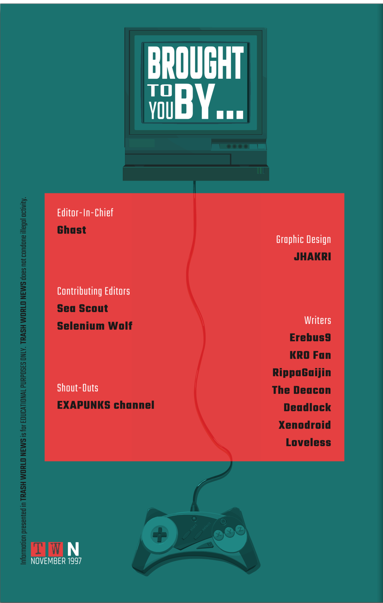
- Editor-In-Chief
- Ghast
- Graphic Design
- JHAKRI
- Contributing Editors
- Sea Scout
- Selenium Wolf
- Writers
- Erebus9
- KRO Fan
- RippaGaijin
- The Deacon
- Deadlock
- Xenodroid
- Loveless
- Shout-Outs
- EXAPUNKS channel
Information presented in TRASH WORLD NEWS is for EDUCATIONAL PURPOSES ONLY. TRASH WORLD NEWS does not condone illegal activity.
TWN — NOVEMBER 1997
Table of Contents
Page 1
TRASH WORLD NEWS — ISSUE 2
Manifesto
Game On
- 04 — Hacker Battle Domination
- 07 — Hardware Hacks: TEC Redshift
- 13 — Network Exploration: King's Ransom Online
- 14 — Hardware Hacks: Sawayama WonderDisc
Hackerverse
- 16 — Letters, Tips, & Ads
- 18 — Hacker Skills: Modem Control at the Direct Level
- 20 — Network Exploration: Geographic Information Systems
- 22 — Look to the Stars with Satellite Uplink Systems
- 26 — How to Validate Credit Card Numbers
- 28 — Hacker Skills: Code Repetition with Macro Instructions
Munchies
Building Momentum
Page 2
Welcome to the second issue of TRASH WORLD NEWS. Let's take a look at how things have been going so far. Even though it's only our second issue, the response has been far bigger than I expected. Our little 'zine got picked up by dozens of stores and newsstands and I've been mailing out a bunch of international copies too. Seems like there's a real thirst for this information out there. It's a good start but let's keep it up.
If you want to help us out, ask your local library why they don't get TRASH WORLD NEWS. Give copies to your friends, or even your enemies. And keep those letters and comments coming in. Hearing from readers who've been helped by the articles we run makes all the rest of the effort worthwhile. We can't reply to all of them but I promise we're reading every single one.
Seems like there's a real thirst for this information out there. It's a good start but let's keep it up...
In this issue we have some incredible scoops. Everything from details on the hacker battle phenomenon that you won't find anywhere else, to behind-the-scenes information about hacking the latest video games and consoles, to some skills that every EXA programmer ought to know.
This is some great stuff, people.
Page 3
But now it's time to look forward.
I have a feeling there may be even bigger revelations on the horizon. Technology keeps developing faster and faster. It's hard to keep track of everything. There's a generalized sense of acceleration everywhere. Doesn't it feel like we're on the cusp of something? Some kind of big change? Society as it's currently designed feels like it might not be sustainable into the future, but it's anyone's guess what the next form will be.
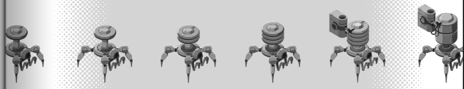
How do you deal with a world like that? I'm not one to tell others how to live their lives, but I can express a hope. I hope that you stay curious, and stay engaged. I hope you think about what's happening and your place in all of this.
My goal is to get people to share the information they find so we know what this new world is as it takes shape.
What's your goal? Ghast out.
Hacker Battle Domination
Page 4
There's a new craze sweeping through the computer underground, a kind of head-to-head hacker sport that's so cutting-edge it doesn't have a proper name yet. I've heard a few being bandied around like "CyberSport," which sounds silly, "electronic warfare," which is a term the military is already using for its own purposes, and "hacker battles," which is apparently sticking despite not being a very catchy term at all.
Whatever you want to call it, here's how it works:
Two players connect to a neutral battleground network. Each of them uploads their preprogrammed EXAs at the same time, which run their code and battle each other for the highest score. Each network features its own unique scoring system. The goal might be to terminate the other player's EXAs, or control certain hosts, or to retrieve a file in a "capture the flag" style tournament. A winner is crowned and achieves the right to brag about it forever more... well, at least until they're beaten by someone else.
![A hacker battle staged in a packed nightclub. Above the stage a sign reads "HAXTASY" in neon letters, topped by a counter showing "53" over the word "CYCLES". Below the sign a giant video wall shows an isometric view of a battle network of hosts in the middle, flanked on the left by one player's panel reading "WINS: 42, POINTS: 21" and on the right by the other player's panel, showing a robot-like avatar, reading "WINS: 43, POINTS: 24". Two players sit at raised consoles on either side of the stage, with dot-matrix nameplates reading "NAUGHTY BOY" (left, written with stylised letters as N∂UGHTY B0Y) and "MOMOKO 120%" (right). Stacks of loudspeakers and spotlights frame the stage, and a large crowd in silhouette fills the foreground.](images/twn-2-fig04.png)
Page 5
Hacker battle pro-tips:
Does that sound fun? Chances are hacker battles are already happening in your local scene. Ask around and before you know it you'll be matching wits with friends, enemies, and maybe even the best hackers around! To get you armed and ready to enter the hacker battle arena, here are some things I wished I knew before I went out and roundly got my butt kicked in my first few battles:
There's a cycle limit.
Each battle has a limit on the number of cycles that will be executed. When you reach this limit the battle ends and the player with the most points wins. In a battle with multiple "test runs", the player who wins the majority of the test runs wins the overall match.
There's a storage limit too.
Each battle has a limit on the number of host spaces that your EXAs (and dropped files) can take up in the network. Attempting to exceed this limit will cause an EXA to stall until more space is freed.
One final tip:
The state of the network during a hacker battle can be difficult to ascertain. Files will be moved around by your opponent's EXAs when you least expect it! Develop for flexibility and maybe take another look at Ghast's article about error handling in issue 1 ["Runtime Errors and How to Exploit Them" - ed.] for more information about how to handle, or maybe even exploit, this uncertainty.
Alright, now it's time to test your mettle in the hacker battle arena! Write in and let us know how you do. And if you're ever in the Bay Area, drop by club Haxtasy where we hold regular head-to-head matches for a live audience with commentary from yours truly!
What Are You Waiting For?
Page 6
THREE CORES.
TEN THOUSAND PIXELS.
TRULY IMMERSIVE 3D GRAPHICS.
POWERED BY EXA TECHNOLOGY.
NOW ONLY $129.99
INCLUDES 3D GLASSES
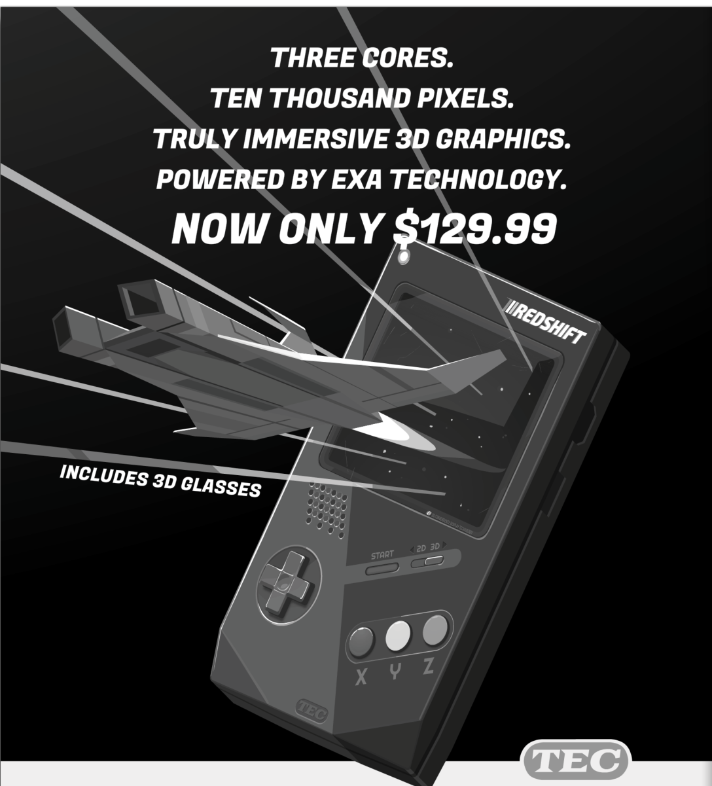
TEC
WHAT ARE YOU WAITING FOR?
Look, it's not up to us to tell you what to do with your life. But if we were you, we'd be hurrying to our nearest participating retailer to get our hands on a TEC® Redshift™, the hottest game-playing machine around.
It's got power. It's got 3D. And it's got games... games you want. All for a price even your parents can't refuse. Everyone knows what to do when opportunity knocks. And the TEC® Redshift™ at this price is one opportunity that won't come knocking again.
Batteries not included.
3D mode not intended for use more than 15 minutes at a time.
EXA is a registered trademark of Axiom, Inc. Used with permission.
TEC Redshift
Page 7
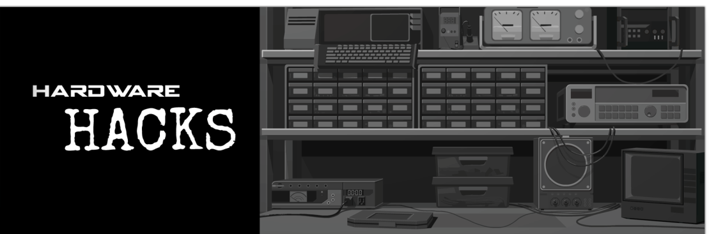
You know the TEC Redshift as the cartridge-based gaming handheld with the gimmicky 3D mode... or as the expensive flop that led to TEC's exit from the games business. But the Redshift is more than that. Today, five years after it first came out, it's a super hackable device that's easy to find in bargain bins and garage sales everywhere.
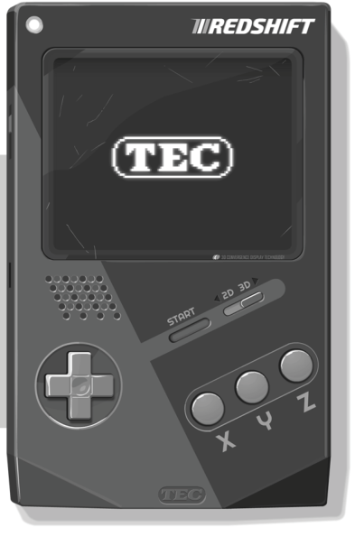
Luckily, making games for the Redshift is actually pretty fun once you get the hang of it. Let's take a little whirlwind tour of everything the Redshift has to offer the professional or hobbyist game developer.
Page 8
Frame Synchronization
The first important thing to grok about the Redshift is how to WAIT. This will likely be a familiar concept if you've done game dev before. The Redshift's VM includes a special WAIT instruction that isn't part of the core EXA programming standard. Executing a WAIT instruction causes that EXA to pause until the next frame synchronization, which happens 30 times a second (every 33 milliseconds). This makes it easy for a complex game to run at a fixed speed, regardless of how many instructions it takes to make your game do what it's supposed to do.
WAIT
"The Redshift's VM includes a special WAIT instruction that isn't part of the core EXA programming standard. Executing a WAIT instruction causes that EXA to pause until the next frame synchronization, which happens 30 times a second (every 33 milliseconds). This makes it easy for a complex game to run at a fixed speed, regardless of how many instructions it takes to make your game do what it's supposed to do."
"If you don't synchronize your EXAs with the Redshift it'll result in a game that's way too fast to actually play."
If you don't synchronize your EXAs with the Redshift it'll result in a game that's way too fast to actually play. Which, let's face it, could be funny...
Data Files
The Redshift's VM also includes support for another non-standard instruction: DATA. DATA instructions are not executed (and in fact look a lot like NOTEs), but are used to specify an initial file that will be held by the EXA when the Redshift initializes. A DATA instruction can be followed by any number of numerical values separated by spaces. If you can't fit all your values on a single line, you can use additional DATA instructions to specify the rest.
DATA
"DATA instructions are not executed (and in fact look a lot like NOTEs), but are used to specify an initial file that will be held by the EXA when the Redshift initializes. A DATA instruction can be followed by any number of numerical values separated by spaces. If you can't fit all your values on a single line, you can use additional DATA instructions to specify the rest."
Graphics System
The Redshift has a 120x100 black-and-white screen. In 3D mode, the white pixels can be separated into red and blue versions, which makes them appear to sit above or below the screen when viewed through the included 3D glasses. This was essentially the Redshift's big selling point, at a time when other handheld consoles were switching to color displays. Unfortunately the Redshift's 3D mode is infamously headache-inducing and you shouldn't use it for long. All of the advertising and manuals for the Redshift suggested taking a break every 15 minutes. I would say take a break every 5 minutes. Or don't use it at all...
Page 9
Each EXA has a 10x10 black-and-white sprite that can be edited when you're writing your code. The sprite can be positioned on the screen by writing numeric values to the GX and GY registers. GX offsets the sprite from the left side of the screen, while GY offsets the sprite from the top of the screen.
GX
"Each EXA has a 10x10 black-and-white sprite that can be edited when you're writing your code. The sprite can be positioned on the screen by writing numeric values to the GX and GY registers. GX offsets the sprite from the left side of the screen, while GY offsets the sprite from the top of the screen."
The screen is 120x100 pixels.
GY
"The sprite can be positioned on the screen by writing numeric values to the GX and GY registers. GX offsets the sprite from the left side of the screen, while GY offsets the sprite from the top of the screen."
The screen is 120x100 pixels.
![A dark screen with a 10x10 sprite on it. A horizontal arrow labelled GX runs from the left edge of the screen to the sprite's left side, and a vertical arrow labelled GY runs from the top edge of the screen down to the sprite's top side, showing that GX and GY are the sprite's offsets from the left and the top. The sprite is a little figure; its pixels, row by row from the top, with # for white (on) and . for dark (off): row 0 ...####..., row 1 ..######.., row 2 ..######.., row 3 ....##...., row 4 ....##...., row 5 ...####..., row 6 .########., row 7 ##..##..##, row 8 #..#..#..#, row 9 #..#..#..#.](images/twn-2-fig08.png)
If you must play with the Redshift's 3D mode, the perceived depth of the sprite can be changed by writing a value to the GZ register (-9 for furthest "into" the screen, 9 for furthest "out of" the screen).
GZ
"If you must play with the Redshift's 3D mode, the perceived depth of the sprite can be changed by writing a value to the GZ register (-9 for furthest "into" the screen, 9 for furthest "out of" the screen)."
"Collision behavior is the same in 3D mode as it is in 2D mode and ignores the value of the GZ register."
The sprite can be changed at runtime by writing a three-digit value to the GP register. The first digit indicates the operation (0 = off, 1 = on, 2 = toggle), while the second and third digits indicate the pixel to change (X and Y, from the top-left corner). So, 190 turns on the top-right pixel, while 209 toggles the bottom-left pixel, etc.
GP
"The sprite can be changed at runtime by writing a three-digit value to the GP register. The first digit indicates the operation (0 = off, 1 = on, 2 = toggle), while the second and third digits indicate the pixel to change (X and Y, from the top-left corner). So, 190 turns on the top-right pixel, while 209 toggles the bottom-left pixel, etc."
Built-in font: "Writing a value in the 300s to the GP register causes the entire sprite to be set to a character in the Redshift's built-in font based on the second and third digits. So, 324 would change the sprite to character 24, the letter X."
![A 10x10 grid of sprite pixels, with an arrow labelled X running left to right along the top and an arrow labelled Y running top to bottom down the left side. Three pixels are lit, each with a line to its label on the right. The pixel in column 6 of the top row (row 0) is labelled 60. The pixel in column 3 of row 6 is labelled 36. The pixel in the bottom-right corner, column 9 of row 9, is labelled 99. Columns and rows count from 0 at the top-left, so each label is the pixel's X digit followed by its Y digit.](images/twn-2-fig09.png)
Page 10
Built-In Font
But wait, there's also rudimentary support for text! Writing a value in the 300s to the GP register causes the entire sprite to be set to a character in the Redshift's built-in font based on the second and third digits. So, 324 would change the sprite to character 24, the letter X.
| Value | Character |
|---|---|
| 0 | (space) |
| 1 | A |
| 2 | B |
| 3 | C |
| 4 | D |
| 5 | E |
| 6 | F |
| 7 | G |
| 8 | H |
| 9 | I |
| 10 | J |
| 11 | K |
| 12 | L |
| 13 | M |
| 14 | N |
| 15 | O |
| 16 | P |
| 17 | Q |
| 18 | R |
| 19 | S |
| 20 | T |
| 21 | U |
| 22 | V |
| 23 | W |
| 24 | X |
| 25 | Y |
| 26 | Z |
| 27 | 0 |
| 28 | 1 |
| 29 | 2 |
| 30 | 3 |
| 31 | 4 |
| 32 | 5 |
| 33 | 6 |
| 34 | 7 |
| 35 | 8 |
| 36 | 9 |
| 37 | . |
| 38 | ? |
| 39 | ! |
Collision System
Sprites can overlap each other, which is defined as each sprite having a white pixel at the same location on the screen. When this happens, each EXA's CI (collision input) register will be set to the value in the CO (collision output) register of the EXA it's colliding with. If multiple sprites are overlapping a sprite, the bigger CO value wins.
CI
"Sprites can overlap each other, which is defined as each sprite having a white pixel at the same location on the screen. When this happens, each EXA's CI (collision input) register will be set to the value in the CO (collision output) register of the EXA it's colliding with. If multiple sprites are overlapping a sprite, the bigger CO value wins."
In the article's examples, CI reads -9999 when the sprite is not colliding.
CO
"When this happens, each EXA's CI (collision input) register will be set to the value in the CO (collision output) register of the EXA it's colliding with. If multiple sprites are overlapping a sprite, the bigger CO value wins."
![Three collision examples, each with two 10x10 sprites. Sprite A (CO 1) is a square outline open on the right side: white along its top, left and bottom edges with a dark interior. Sprite B (CO 2) is a square outline open on the left side: white along its top, right and bottom edges. Example 1 (left): the sprites sit apart, not touching. Labels: sprite A CO 1, CI -9999; sprite B CO 2, CI -9999. Example 2 (middle): sprite B overlaps the lower-right of sprite A, but their white pixels do not land on the same screen locations. Labels: sprite A CO 1, CI -9999; sprite B CO 2, CI -9999. Example 3 (right): sprite A is up and to the right and sprite B down and to the left, overlapping so that white pixels of each lie on white pixels of the other. Labels: sprite A CO 1, CI 2; sprite B CO 2, CI 1. The examples show that CI takes the other EXA's CO only when white pixels coincide, and is -9999 otherwise.](images/twn-2-fig10.png)
Collision behavior is the same in 3D mode as it is in 2D mode and ignores the value of the GZ register. If you want collision discrimination in the Z dimension you'll have to implement it yourself.
Page 11
Audio System
The Redshift has four audio channels, each linked to a single register: two square waves (#SQR0 / #SQR1), one triangle wave (#TRI0), and one noise channel (#NSE0).
Writing a numeric value to a square or triangle wave channel will cause it to play that note continuously until stopped by writing a value of 0.
#SQR0
"The Redshift has four audio channels, each linked to a single register: two square waves (#SQR0 / #SQR1), one triangle wave (#TRI0), and one noise channel (#NSE0)."
"Writing a numeric value to a square or triangle wave channel will cause it to play that note continuously until stopped by writing a value of 0."
The article's keyboard chart numbers the notes from 36 to 96, with middle C at 60.
#SQR1
"The Redshift has four audio channels, each linked to a single register: two square waves (#SQR0 / #SQR1), one triangle wave (#TRI0), and one noise channel (#NSE0)."
"Writing a numeric value to a square or triangle wave channel will cause it to play that note continuously until stopped by writing a value of 0."
The article's keyboard chart numbers the notes from 36 to 96, with middle C at 60.
#TRI0
"The Redshift has four audio channels, each linked to a single register: two square waves (#SQR0 / #SQR1), one triangle wave (#TRI0), and one noise channel (#NSE0)."
"Writing a numeric value to a square or triangle wave channel will cause it to play that note continuously until stopped by writing a value of 0."
The article's keyboard chart numbers the notes from 36 to 96, with middle C at 60.
Writing a numeric value to the noise channel controls the pitch. Lower values result in lower-frequency noise, and a value of 0 turns it off completely.
#NSE0
"The Redshift has four audio channels, each linked to a single register: two square waves (#SQR0 / #SQR1), one triangle wave (#TRI0), and one noise channel (#NSE0)."
"Writing a numeric value to the noise channel controls the pitch. Lower values result in lower-frequency noise, and a value of 0 turns it off completely."
![A five-octave piano keyboard showing the note value for each key, from 36 at the far left to 96 at the far right. White keys, left to right: 36, 38, 40, 41, 43, 45, 47, 48, 50, 52, 53, 55, 57, 59, 60, 62, 64, 65, 67, 69, 71, 72, 74, 76, 77, 79, 81, 83, 84, 86, 88, 89, 91, 93, 95, 96. Black keys, left to right: 37, 39, 42, 44, 46, 49, 51, 54, 56, 58, 61, 63, 66, 68, 70, 73, 75, 78, 80, 82, 85, 87, 90, 92, 94. So each key is one higher than the key to its left, counting black and white keys together. The white key 60 is marked Middle C. Each C is at 36, 48, 60, 72, 84 and 96.](images/twn-2-fig11.png)
Input System
The #PADX register indicates the horizontal state of the D-pad (-1 = left, 0 = center, 1 = right). The #PADY register indicates the vertical state of the D-pad (-1 = up, 0 = center, 1 = down).
#PADX
"The #PADX register indicates the horizontal state of the D-pad (-1 = left, 0 = center, 1 = right)."
#PADY
"The #PADY register indicates the vertical state of the D-pad (-1 = up, 0 = center, 1 = down)."
The #PADB register indicates the state of the X, Y, Z, and start buttons. If the X button is held, the ones digit will be a 1; otherwise it will be a 0. The Y button is similarly indicated by the tens digit, the Z button by the hundreds digit, and the start button by the thousands digit.
#PADB
"The #PADB register indicates the state of the X, Y, Z, and start buttons. If the X button is held, the ones digit will be a 1; otherwise it will be a 0. The Y button is similarly indicated by the tens digit, the Z button by the hundreds digit, and the start button by the thousands digit."
The #EN3D register indicates whether or not the Redshift is in 3D mode (1 = on, 0 = off).
#EN3D
"The #EN3D register indicates whether or not the Redshift is in 3D mode (1 = on, 0 = off)."
Conclusion
That's about it for the major Redshift systems. Last thing is, whatever you make, don't forget to share it with your friends! TEC couldn't make a successful game console if their lives depended on it, but at least we get to enjoy the fallout from the disaster.
Don't Leave Your Fantasies Behind.
Page 12
![A chunky digital wristwatch with a dark strap. A shield-shaped castle-tower emblem sits above the screen with "GAME.LINK" printed beneath it, and "KING'S RANSOM ONLINE" is printed on the case below the screen beside a round button. The LCD screen shows: top row, a person icon and the number 017, then a crossed-swords icon and a castle-tower icon; middle row, the date "NOV 28" and the time "6:23" with a crescent moon icon; bottom row, an auction gavel icon and "12520g". Six italic callouts point to parts of the screen, transcribed below.](images/twn-2-fig12.png)
17 guildmates online. Now we're ready to raid. (pointing to the person icon and 017)
Castle Longstone under attack? Better alert my friends. (pointing to the swords and castle icons)
It's the Month of Sorrows already. I'll have to check in at the Enchanted Grotto. (pointing to the date, NOV 28)
Nighttime. I'll be on the lookout for wraithwolves. (pointing to the time and moon icon)
That Crystal Sword sure went for a pretty penny at auction... (pointing to the gavel icon)
Looks like I can finally afford to upgrade the Wizard's Tower. (pointing to 12520g)
King's Ransom Online is so realistic you never want to leave... and now you'll never have to. Introducing the Game.Link Watch KRO Edition. All the in-game information you could ever want just a quick glance away whether you're at work, school, or out on the town. Act now and get your first month free* with qualified purchase.
KRO not quite your cup of tea? Keep an eye out for BloodLust Online and Hollow Hill Chronicles Game.Link editions, available soon at game stores near you!
GAME.LINK — ALWAYS CONNECTED
*One (1) month free with qualifying initial purchase of Game.Link Watch and Service. $7.99/month thereafter with minimum 24-month subscription. Cannot be combined with other offers. Void where prohibited. King's Ransom Online is a registered trademark of Wobble, Inc. BloodLust Online is a trademark of RedWine Studios. Hollow Hill Chronicles is a trademark of Okapro.
King's Ransom Online
Page 13
Hail, fellow warrior! Welcome to the land of King's Ransom Online (KRO in the language of the bards), the most popular online game in all the Six Realms.
Welcome to the land of King's Ransom Online, the most popular online game in all the Six Realms...
Forsooth, KRO employeth the latest in network programming technologies, the small but noble EXA. Every player that connecteth to this game is represented by an EXA and every weapon and building is represented by a file.
Each realm is hosted on a dedicated server, so as to handle the vast numbers of players that connect to KRO. Alas, many a great battle has passed where congestion meant players could not connect to the realm in contest...
- Buildings
Each building in KRO posesseth the following format: name, type (either CASTLE, BUILDING, or UPGRADE), owner's player ID, and zero or more numbers that are the file IDs of sub-buildings of this building. Verily, sub-buildings can even have their own sub-buildings, such as the legendary Wizard's Tower.
- Weapons
Furthermore, each weapon in KRO posesseth the following format: name, damage, damage type, speed, weight, durability (999 = perfect, 0 = broken), and any special effects the weapon may have.
Beware, warrior! Such knowledge is dangerous! Let us not speak of this further, lest the furies of the Great Deep come for us...
Sawayama WonderDisc
Page 14
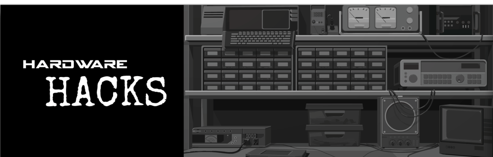
Sawayama Corporation was named after a castle in medieval Japan, and rumor has it Sawayama's current CEO is a direct descendant of the clan that held it. Today as everyone knows Sawayama is a purveyor of fine consumer electronics and video games like the WonderDisc... except that they've seen fit to lock its games behind region controls! What a bummer!
Region Locking Basics
So how does this work? WonderDiscs are region-locked by scattering region codes throughout the tracks on the discs. If the OS detects a region code that doesn't match its built-in region code it will refuse to play the game.
SSEC = Japan, Asia SSEA = North America, South America SSEE = Europe
Unfortunately the WonderDisc OS is locked down inside the RealityProcessor, which is well-defended and inaccessible to outside EXAs. Much like a mountain fortress. But, also like a mountain fortress, there's other ways in, like hiding in empty saké barrels or crawling in through the drainage ditch (I watch a lot of ninja movies). In the WonderDisc's case, this flaw is the disc drive itself.
Page 15
Hacking the Disc Controller
It's possible to connect to a debug port on the disc drive and inject one or more EXAs into the disc controller. You can then read the #TRAK register to find out which track the WonderDisc needs you to read from the loaded disc, grab that file, and make a copy of it replacing the disc's region code with the region code of your WonderDisc device. When you drop the modified track copy into the "buffer" host, an EXA from the RealityProcessor should come out and carry the file back where your EXAs aren't allowed to go.
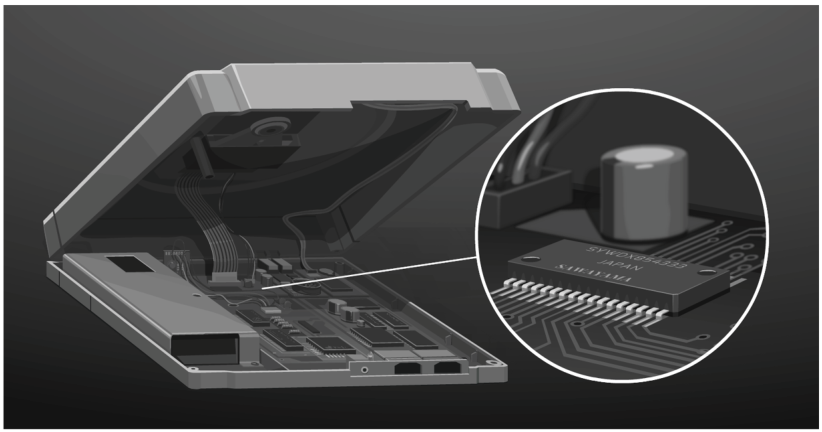
Unlocking the Disc Drive
There's one small catch: the drive itself must be unlocked by the WonderDisc before you can read anything from it. When you're not modding your console this will happen automatically, but you'll need to provide that key yourself. Fortunately, yours truly extracted the key with a bottle of hydrofluoric acid and a high-power microscope, wasting five perfectly good WonderDisc drives in the process.
Sawayama's not-so-secret key: 8, 0, 3, 2, 7, 1, 0, 4, 9, 5, 1, 2, 5, 2, 6
Letters, Tips, & Ads
Page 16
Letters
Dear Editor,
Loving the 'zine so far. I quickly learned how to program EXAs and was able to use that knowledge to fight the system already. Well, in this case "fighting the system" means rescheduling my classes so I don't have to take any in the morning, but I'll get to the big "benefit to society" part sooner or later. Thanx!
BillJ
Glad you found the info useful. Don't get lazy now though.
Yo, love the content but what's with the ads? For an underground publication, there sure is a lot of crass commercialism.
John Doe
We don't take money for the ads. They're from friends of the 'zine and should be of interest to hackers. Occasionally we'll reprint old advertisements as a way to illustrate or inform a product's history. But that should be obvious.
Greetings Ghast,
I'm sure you've heard the rumor about the collective that lives inside an old unused computer warehouse. Well, I thought you might like to know I've just come across something that convinced me it's 100% real! It looks like it's connected to a drug lab. I don't want to say too much here... contact me back for further thoughts.
Major Cheese
This isn't much of a tip. Contact us again when you have a better idea of what's going on.
Dear Trash World News,
I found the article on "the phage" extremely interesting. Do you know if it spreads from person to person? I know it's not necessarily a good thing, but I have to admit I kind of love the idea of having a usable computer interface to my body.
Tian500
It's really not something you'd actually want. Not in its current form.
Hey Ghast,
Just wanted to say at least one copy of Trash World News has been spotted floating around on the lunch tables at Axiom headquarters... and there may be more. Safe to say you've got some fans on the inside! Next time you want to reprint our documentation, though, feel free to ask us first.
Nameless Axiom Employee
We appreciate the offer, but we like the idea of spreading useful information with or without permission.
Most Esteemed Hackers,
After being dragged to Wild Waves by my stepmom for the TEN THOUSANDTH time, it occured to me to wonder if this magazine would ever consider publishing an article of revealing information on the kinds of systems employed in the control of artificial wave pools. Specifically, might the mechanism that controls the wave be modified to generate an anomalous wave of an exceedingly large size, timed perfectly to coincide with the entrance of a certain personage into the water? I am looking forward to your response.
Myron A.
All it would take is someone doing the research and writing up the results for an article. Luckily, the phone number for this water park is easy enough to look up: 65-0-8193-3255.
Dear Trash World News:
I was so excited to get some elite food skillz that I tried to make "dumpster donuts" like the article described as soon as I could. I threw them in, set the oven to broil, and went back to my computer for a bit. Then before I knew it the kitchen was spewing smoke and the fire alarm for the whole building was going off!!!! Did I mention this was at 4am? All my neighbors are mad at me now. Cooking is trickier than I thought.
Nared
Keep at it, Nared. You might like the instant ramen tips in this month's column.
Page 17
Tips
Tips
Television Station Numbers
Bay Area folks know the local KGOG television station... I noticed they had a call-in number for their talk shows: 47-2-1613-4600. Curious, so I decided to run my custom-built wardialer to see what else could be sniffed out, with some interesting hits:
47-2-1613-4664 x103: This appears to be the programming hub, a network that controls what tapes are broadcast at any given time.
47-2-1613-4664 x105: This is the station's satellite uplink for sending broadcasts. Woah!
47-2-1613-4664 x107: This appears to be a fully automated ad-buying system.
Tips
Xtreme League Baseball Statistics
Did you know you can download all the XLB stats you could possibly want, directly from their official server? Dial 31-0-3050-7466 to find and retrieve player information including batting average, zinger average, assaults per ball and more. Perfect for stats crunchers.
Tips
Mayhem at Robert E. Cheese's
Dial 35-0-5253-8723 to access the computer systems for the Robert E. Cheese's in Durham, NC. The real fun is on extension 126 which connects you to the animatronic sequencing system! It gives you control of everything: the music, the lights, and most importantly, complete control of the animatronics. I reprogrammed the system to play a power metal ballad but I burnt out one of the servomotors during the final solo and the banjo player burst into flames. At this point the manager basically thinks his restaurant is haunted. Who's to say it isn't?
Ads
For Sale
ATMs for sale.
Old-model ATMs from a few closed bank locations. Of interest to hackers, security researchers, or someone interested in starting up their own bank on the cheap. $300 each. 09-1-0284-4757.
For Sale
Fractal poster prints.
Liven up your hacker den with the timeless appeal of fractal imagery. Mandelbrot, Julia sets, and more. $10 each, or three for $25. Guaranteed to make you cool. Log in at 44-2-5549-1329.
For Sale
Universal tone generator.
Red box, blue box— all the color boxes combined in one device. Generate tones used to control the telephone system. Fits easily in the palm of the hand. $40, batteries not included. Dial 21-1-7720-4941.
Help Wanted
Security startup looking for hackers.
We are recruiting for several open positions on our computer security team. We consult for private enterprise and government. Good pay, fun co-workers, and free soda. Call 65-0-9005-0495.
Help Wanted
Got a supercomputer?
I need supercomputing power. I have cash. Would love a Holman-II or similar model. 47-2-7727-0070.
Meetups and Personals
Kansas hacker meetup.
First Thursday of every month at 6pm in Oak Park Mall in Overland Park. Meet in the food court by the Panda Express. Be there!!
Meetups and Personals
Dare to dream.
Chaos Dreams is Southern California's biggest and best anarchy BBS. Tons of philes, warez, and samizdat for the discerning anarchist. 47-0-9164-4001, 4002, and 4003.
Modem Control
Page 18
When you dial into a remote network, the actual dialing usually happens transparently, hidden from you by your development environment or network browser. It's actually the only way that you can use most softmodems that come with personal computers these days. This is why I still recommend getting a dedicated hardware modem. A hardware modem will let you upload your own EXAs directly into it, giving you way more control over what it's doing.
The technical details:
What kind of control are we talking about here? Well, all NETronics-compatible modems have a #DIAL register that takes one digit at a time that can be used to programmatically dial a phone number. After establishing a connection (and assuming that there's actually a computer on the other end that wants to talk to you), you should be able to traverse the 800 link to connect to the remote host. Writing -1 to the #DIAL register hangs up the modem. If you're connected to a remote network, this will break the connection.
#DIAL
Present on all NETronics-compatible modems. Takes one digit at a time and can be used to programmatically dial a phone number. After a connection is established (and there is a computer on the other end that wants to talk), traverse the 800 link to connect to the remote host.
Writing -1 to #DIAL hangs up the modem. If you're connected to a remote network, this will break the connection.
![An in-game network view of a TEC EXA-Blaster modem, with a TEC logo at the bottom. A status panel at top left reads "EXA-BLASTER" with a "TEC" badge, and under MODEM STATUS: "CONNECTED TO HOST 47-2-7381-4772". At the bottom left is the local host FM-TOWNS containing EXA XA. Link 800 leads from FM-TOWNS (its other end labelled -1) into the modem host, a long corridor-shaped host marked TEC that holds the #DIAL register near its far end. From the modem host a link labelled 800 on the modem side and -1 on the far side leads to the remote host A9-07, where EXA XB has arrived. Arranged on either side of the corridor, not linked, are seven more small remote hosts labelled A9-00 through A9-06; A9-07 and each of these holds one locked file numbered 200. The picture illustrates dialling out through the modem and traversing link 800 into the remote network.](images/twn-2-fig15.png)
Page 19
There should be a physical switch on your modem that controls whether or not it will automatically pick up when a remote modem calls your phone line. DON'T LEAVE THIS FEATURE ON UNLESS YOU KNOW WHAT YOU'RE DOING! That isn't specific to direct level modem control. It's just good advice for anyone with a modem connected to their computer. You never know who is calling. Some newer modems have "caller ID" features that can tell you the phone number of the modem that dialed into yours, but they're not widespread or standardized yet.
A hardware modem will let you upload your own EXAs directly into it, giving you way more control...
Shopping for a hardware modem:
If you don't have a modem that supports direct level modem control, look for a NETronics NET40 or a TEC EXA-Blaster. They're both a few years old at this point and can be purchased on the cheap from surplus stores for about $50.
Don't get fooled looking at the expensive commercial-grade modems. There's no difference on the inside. Despite costing twice as much at retail, the commercial-grade NET80 is identical to the NET40 except for its plastic case, which is designed to stack for use in modem banks. That's how they think they can pull one over on their corporate customers.
Geographic Information Systems
Page 20
There are some generalized methods of laying out these networks, which fancy programmers sometimes call Geographic Information Systems...
You might have noticed lately there's been a rush to digitize all kinds of information, even information that corresponds to physical locations in the real world. This can be useful if you're, say, a utility company or a travel agency, since your data will automatically inherit the same spatial relationships they have in real life. There are some generalized methods of laying out these networks, which fancy programmers sometimes call Geographic Information Systems, or GIS.
Now, accessing these kinds of datasets can be tricky because of the whole spatial organization aspect. They're not the same thing as your normal database-style "big list of stuff." But it's not so bad once you get the hang of it. Here I'll describe a couple common schemes for GIS and you'll be traversing and grabbing whatever you need from them in no time.
Page 21
STREETSMARTS One common system for GIS networks mapped to cities is StreetSmarts. In StreetSmarts, each city block corresponds to a small host in the network. In order to make exploring the network consistent, the link IDs correspond to compass directions (N = 800, E = 801, S = 802, W = 803).
![An in-game network view titled "Street Smarts GIS" (with a compass-star logo) and the subtitle "QuickDocs Courier Service". A compass rose at left is marked N and shows the link IDs 800, 801, 802 and 803 on its four arms. The network is a grid of 20 square city-block hosts, five along one axis and four along the other, labelled UB00 to UB03, UB10 to UB13, UB20 to UB23, UB30 to UB33 and UB40 to UB43; neighbouring blocks are joined by short links. Every block holds one locked file numbered 200. At the bottom left, the local host DEADLOCK contains EXA XA; its link 800 (other end labelled -1) enters the grid at the block in the UB20 position, whose label is hidden behind the link. Faint outlines of further blocks continue beyond the grid in every direction.](images/twn-2-fig17.png)
GLOBALYST Another common system for GIS networks at the scale of a continent or even the world is called GLOBALYST. In GLOBALYST each country corresponds to a host, with links that match some sort of physical connection between those countries, like common travel routes or transoceanic cables.
![An in-game network view with a wireframe globe logo reading "GLOBALYST" at bottom right. Hosts are countries. The local host DEADLOCK (bottom left) contains EXA XA; its link 800 leads to SPAIN (other end -1). SPAIN link 803 connects to PORTUGAL link 801; SPAIN link 800 connects to a large central host with no visible name, at its link 802. The central host's link 803 connects to ENGLAND link 801; ENGLAND link 803 connects to IRELAND link 801. The central host's link 800 connects to a small unnamed host at its link 802; that host's link 800 connects to HOLLAND link 802, and its link 801 connects to DENMARK link 803. The central host's link 801 connects to GERMANY link 803; GERMANY link 800 connects to DENMARK link 802. Each host has a register showing a value: IRELAND 1 (no label shown), ENGLAND #LIVE 1, PORTUGAL #LIVE 0, SPAIN #LIVE 1, central host #LIVE 0, small unnamed host #LIVE 1, HOLLAND #LIVE 0, DENMARK #LIVE 1, GERMANY #LIVE 1.](images/twn-2-fig18.png)
Look to the Stars with Satellite Uplink Systems
Page 22
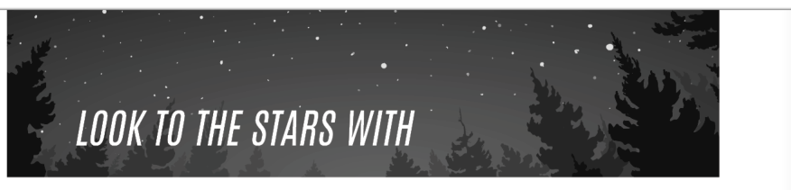
Communication satellites are amazing technology. They can relay long distance telephone calls and even send live broadcasts to TV stations around the world! Anyone with an interest in modern communications infrastructure should learn something about how satellites work, especially since they're only going to become more common over the next few decades.
Establishing a connection
Though they might seem intimidating at first, satellites are really just expensive computers that happen to be in orbit around the Earth. Talking to them isn't hard. The first thing you need to know about is positioning the dish. Satellite dishes need to be aimed precisely (since they're trying to pinpoint something in space... obviously). The dish position is usually expressed as degrees of azimuth and elevation, and the dish itself is controlled with motors. It's not uncommon in EXA-controlled systems to see motors interfaced as a register that lets you read the current position (or angle, in this case) and a register that controls the motor movement (write 1 or -1 to move in either direction).
![Diagram of a satellite broadcast system. A SATELLITE with solar panels at top centre exchanges beams with dishes on the ground: LIVE NEWS, a van marked KGOG with a dish on its roof; CONTENT PROVIDERS, a warehouse-like building with a dish; a large office building with a dish on its roof; and a small station building with a dish next to a broadcast tower sending out radio waves. At right, under the label TELEVISION VIEWERS, two houses with roof antennas pick up the tower's broadcast, and two more houses are connected by cable to the large office building.](images/twn-2-fig20.png)
Page 23
Encrypting the payload
The next concern is encryption. Since anyone can point a satellite dish at a satellite and blast away, almost all systems reject any transmissions that aren't encrypted with a private encryption key. If you do get your hands on a key though, it's pretty simple to implement.
To encrypt a sequence of values, add the first value of the key to the first value of your data, wrapping back to 0 when the sum reaches 10000. So, if the data value was 7407 and the key value was 3894, the sum would be 11301, which would be transmitted instead as 1301.
To encrypt the second data value, use the second key value, and so on. If your message is longer than your key you'll run out of key values. In this case, go back to the beginning of your key sequence and repeat the key again. That's it!
| DATA | 3588 | 2384 | 1878 | 7407 | 7288 | 1388 | 2901 | 8639 | 5270 | 4663 |
|---|---|---|---|---|---|---|---|---|---|---|
| KEY | 3280 | 3105 | 3775 | 3894 | 4782 | 5193 | 3280 | 3105 | 3775 | 3894 |
| RESULT | 6868 | 5489 | 5653 | 1301 | 2070 | 6581 | 6181 | 1744 | 9045 | 8557 |
Haxtasy
Page 24
The ultimate hacker club just got better...
Jack In
Power and phone jacks at every table with a PBX in the back and 40 outgoing lines!
Game On
Awesome arcade including two brand-new HACK*MATCH machines straight from Japan!
Corner of Folsom & 16th
47-2-6838-8818
Page 25
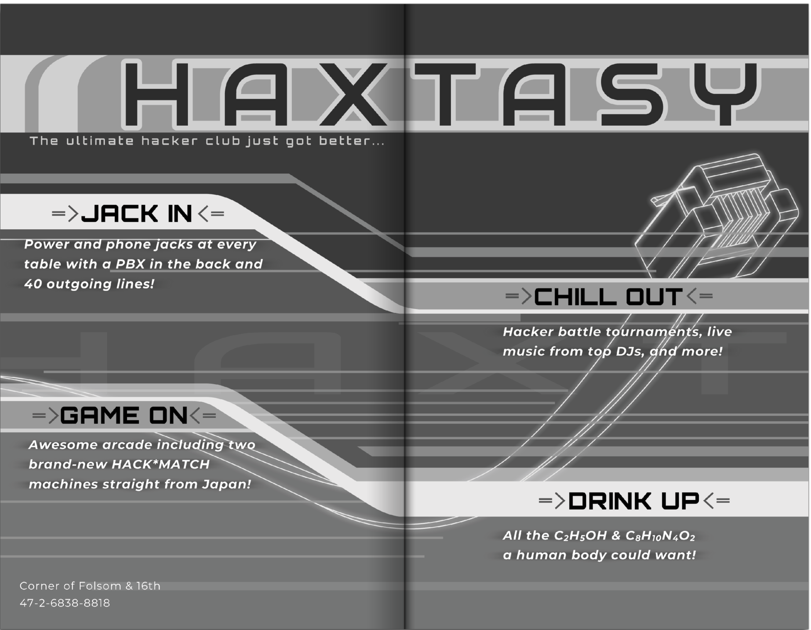
Chill Out
Hacker battle tournaments, live music from top DJs, and more!
Drink Up
All the C2H5OH & C8H10N4O2 a human body could want!
How to Validate Credit Card Numbers
Page 26
"It's only a matter of time until the economy becomes COMPLETELY digital..."
If you've ever messed around with credit cards you know you can't just make up any number and have it be accepted. In this article I will present the method used by all major credit card issuing and processing companies to validate card numbers. Knowing this process will let you generate numbers that will pass the validation scheme.
As you've probably noticed, most credit card numbers are sixteen digits long. The first fifteen are the account number, while the final digit is a "check digit" to make sure that the account number was correctly swiped or entered.
To validate a number, start by summing all sixteen digits from left to right. For the even digits (2nd, 4th, 6th, 8th, 10th, 12th, 14th, 16th) add the digit as-is, but for the odd digits (1st, 3rd, 5th, 7th, 9th, 11th, 13th, 15th) you need to double the digit and subtract 9 if it's greater than 9 before adding it to the sum.
If the last digit of the sum is 0, which means the number is evenly divisible by 10, it's a valid credit card. Why is it designed this way? Beats me! If anyone knows more about the whys, feel free to write in...
Page 27
To recap, here's a breakdown of the process again with an example credit card number to validate:
| Raw digits: | 8 | 4 | 8 | 7 | 8 | 5 | 0 | 5 | 8 | 8 | 5 | 2 | 5 | 3 | 0 | 6 |
|---|---|---|---|---|---|---|---|---|---|---|---|---|---|---|---|---|
| Double the odds: | 16 | 4 | 16 | 7 | 16 | 5 | 0 | 5 | 16 | 8 | 10 | 2 | 10 | 3 | 0 | 6 |
| Subtract 9 if > 9: | 7 | 4 | 7 | 7 | 7 | 5 | 0 | 5 | 7 | 8 | 1 | 2 | 1 | 3 | 0 | 6 |
Sum: 70. Last digit of sum: 0.
Of course, just because you've generated a valid credit card number doesn't mean it's a real actual credit card number. Validation is just for checking to see if the number you have isn't made up or junk. The number still won't work once you try to use it, since the valid number will be used to try to access an account that doesn't exist. But that's a whole other part of the system, and something I may cover in a future article.
Code Repetition
Page 28
Say you're writing an EXA and need to do something more than once but always the same number of times. In some cases, you'll find that it's easier to copy and paste one or more instructions a few times instead of creating a loop.
Sometimes stupid code is smarter code.
Consider this code, which uses a loop to write the values 1-5 to a file:
EXA XA
COPY 1 X MARK LOOP COPY X F ADDI X 1 X TEST X = 6 FJMP LOOP
You could "unroll" your loop and rewrite it like this:
EXA XA
COPY 1 F COPY 2 F COPY 3 F COPY 4 F COPY 5 F
It looks unexciting, but writing it this way has certain advantages. For one, it doesn't use any registers. Perhaps more importantly, it's more than 4x faster than using the loop!
Although unrolling your loops can be more convenient and sometimes more efficient, copying and pasting code is error-prone and tedious— especially if you have to make small tweaks in the pasted versions. That's where the secret magic of macro instructions comes into play. Just introduced into recent versions of EXODUS, think of macro instructions as "code that writes code." More technically, they're pseudo-instructions that generate repetitive code so you don't need to write everything out manually.
Page 29
Sometimes stupid code is smarter code...
Let's take a look at some examples:
Instead of writing this:
COPY F M COPY F M COPY F M COPY F M
You could write this:
@REP 4 COPY F M @END
Instead of writing this:
COPY 1 F COPY 2 F COPY 3 F COPY 4 F COPY 5 F
You could write this:
@REP 5
COPY @{1,1} F
@END
And instead of writing this:
TEST X = 0 TJMP CASE0 TEST X = 5 TJMP CASE1 TEST X = 10 TJMP CASE2
You could write this:
@REP 3
TEST X = @{0,5}
TJMP CASE@{0,1}
@END
Here's a full description of the syntax:
@REP N
Repeat the code between this and the subsequent @END pseudo-instruction N times. N has to be a constant number, not a register, since the duplication occurs before the program starts running. You also can't nest @REP/@END blocks.
@{N,M}
This substitutes a calculated numerical constant. On the first repetition, the value N will be used. On subsequent repetitions, the value will increase by M each time. N and M have to be constant numbers.
Trash World Kitchen
Page 30
Let me recap it briefly: Maybe you wish you were just a brain in a jar. Unfortunately you're not...
Welcome back to the Trash World Kitchen, where we take trash food and make it marginally better! If you read my last column you'll know why we're here, but for those of you just joining us with this issue, let me recap it briefly:
Maybe you wish you were just a brain in a jar. Unfortunately you're not. Food gets boring if you eat the same thing over and over again, but getting expensive and fancy with your food is silly. There's stuff you can do to terrible food that can make it a little better and slightly more exciting!
That's right, today we're talking about...
Instant Ramen
This issue we're going to talk about the hacker food par excellence: instant ramen. Who hasn't had a brick of ramen at some point and enjoyed that salty, vaguely chemical broth? Come to think of it, why are noodles a thing anyway? Why does putting carbohydrates in strings make them so appealing?
Page 31
Whatever the reason, we all know the usual drill: Dump the noodles and the packet in water and heat it up. Easy. That's the point. Of course it provides nothing in the way of nutrition, so you'll probably be hungry again soon, but it does the trick for a while at least.
- One thing you can do is crack an egg into it as it's boiling. It's the classic way to accessorize instant ramen and nets you a little protein. Not bad!
- You can also sprinkle frozen vegetables in with the soup for a little fiber and some vitamins, though they won't necessarily be very tasty. Frozen veggies are easier to keep around than eggs though! Just remember that dropping a big brick of them into your soup will lower the temperature drastically.
- If you're in a super-hurry or if you pretty much hate yourself, you can always eat the ramen brick straight out of the package. Sprinkle some of the seasoning powder on it too if you like. The noodles are already cooked (you're really just warming them up and softening them when you prepare them) so they are technically edible even though they're hard and crackly and might scrape the roof of your mouth. But what do you care for this flesh-prison of yours anyway...
- Finally, here's something marginally fancy you can do with instant ramen. First, set the seasoning packet to the side. Make the noodles like usual, then drain off the water. Crack an egg over it (trust me on this one), mix it so it's even, sprinkle some Parmesan cheese and bacon bits over it, then stick it in the microwave for ten or fifteen seconds, just enough to make the egg set. This is a serviceable pasta carbonara that I may or may not have served to actual guests and passed off as real cooking.
Honestly, at that point cooking real pasta isn't that far off. If you find yourself doing things like this, grab a cookbook at your local library. You'll surprise yourself finding out just how much cooking is like programming!
Passing Resemblance
Page 32
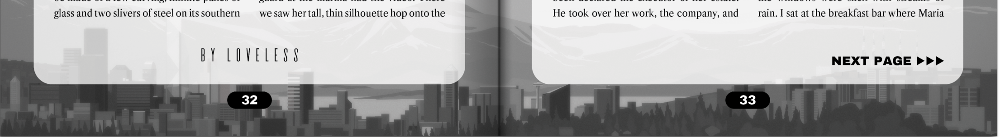
Sharon put me in a small office across the hall from hers. Ben remained steadfast in his attention toward me. Much to my chagrin, I never knew anything about my mother's corporate life. She had a separate family. Ben was not simply a tutor; he had a PhD in Bioinformatics and had worked with my mother in Siberia. And I had never known.
Ben had a neatly trimmed, but graying beard. It resembled a speckled bird's egg in texture and coloration. He was a bumbling man, sometimes, and I worked with him often. Without Priya, he relaxed. She had returned to managing one of the labs and looked like the ideal scientist in her lab coat and sensible closed-toe shoes.
Sometimes, in the summer, Ben finished his work early and watched baseball games on an old television. I never liked baseball, but I would watch with him anyway. I liked Ben, and that was good enough.
The memorial service was held in the conference hall at the Powell Institute's office, a ten story building that appeared to be made of a few curving, infinite panes of glass and two slivers of steel on its southern edges. Little had to be done to the austere environment. Its white walls and slate tiled floors did well to capture the solemnity. A bouquet of white lilies rested on the podium.
When I spoke, the words caught in my throat, like I was trying to swallow gravel. The room was awash with exhaustion, silence. A few beleaguered claps of applause followed. Sharon had lit a fire for these people, but, without its burn, they were just burnt out. I didn't know Sharon as they did.
Ben clapped the longest, and he placed his hand on my shoulder when I sat. Gave it a squeeze. Then he went to the podium. The same podium where Sharon delivered staff meetings and morale-inducing speeches. Her fingerprints must've been etched into the surface after all those years.
There weren't any ashes. Nothing to see. When her yacht hit the rocky shoreline off the coast of a town one hundred miles north of the harbor, no one was quite sure she was even on board. But the security guard at the marina had the video. There we saw her tall, thin silhouette hop onto the deck, and then the boat slip from the dock. Sharon learned how to maneuver it out of its dock and the marina thanks to Ben.
Page 33
Ben's eulogy was sweet and poignant. His eyes watered. He recused himself mid-sentence, glanced away. If I had been a stranger attending, I would've wept. But instead, I felt the burning shame of my own words. So meaningless. And untruthful. Ben stroked his hand in his speckled beard when he finished. He turned to her picture, emblazoned on the massive screen behind him.
A cold knife pressed through my heart; it was a mirror, that was me. A gasp escaped my mouth, my eyes and chest burned, as though my insides had turned to fire. A hand, Priya's, stroked my hair. 'Ssh, it's okay.' I fell against her and heaved a dry sob.
My mother's cloning experiment was a failure in its ultimate purpose: to create a replacement for her. After the service, I fled to the condominium and stayed there. Ben came, sometimes. He had been declared the executor of her estate. He took over her work, the company, and was appointed by the board as the interim CEO. Ben told me I was free.
Free.
At first the word blew through my mind with the force of a storm, shredding the broken webs and bindings. I smiled, I laughed. I tore her photo from the wall. I took all of her things and packed them into cardboard boxes. I was free.
But then, looking at the bare floors and walls, feeling the cold morning air seep through the place, I knew it was not mine. It was hers. I had desecrated Sharon's home.
So, I took everything out of the boxes, all of her clothes, her paintings, her notebooks and her gadgets, and lined them up on the tables and counters, hung them back in the closets, set them by her bed. I fluffed her pillows, changed her sheets, and tucked the corners of the comforter under the mattress. I put everything back, because it was not mine and it was not my place.
Ben came one morning. The sky bloated with fog and heavy clouds and the windows were slick with streams of rain. I sat at the breakfast bar where Maria had once braided my hair, where Priya had taught me the Pythagorean theorem, where Sharon had glared at me icily from across the kitchen. Ben let himself in with an old key. He set a brown paper bag on the counter.
Page 34
'Bagels,' he said.
Without a word, I stood and dug through a drawer in the kitchen for a knife.
'Toasted?'
Ben nodded. He opened the crinkling bag, took out two bagels, and set them on the counter. One was sesame seed, the other French toast. When I set my eyes on the bagels, my cheeks and lips flexed, I was alarmed. Then I realized I was smiling for the first time in weeks.
We prepared our breakfast in silence. Ben took charge of the espresso machine and produced two cups of coffee from the gleaming metal contraption. I never did understand that machine, let alone the appeal of coffee. Naturally, Sharon loved it.
Ben brought me a delicate and tiny white cup of the stuff. His beard seemed as white as the foam topping the cappuccino.
'I thought you were going to pack her things up,' Ben said.
'Didn't seem right for me to do it.'
'You're her daughter.'
Ben drew a hand through his hair. The lines about his eyes grew deeper, like the trenches of the ocean's depths, under the gray light from the window. 'It's hard, sometimes, to look at you.'
'I know, but I can't help it.'
'I told her she was being foolish, with the whole thing. Continuing all of this...' Ben laughed a little bit, but it was strained.
'Continuing what?'
The rain picked up, spattering against the windows with renewed force. I set my bagel, half eaten, back on the plate and pushed it away.
'You're not the first,' Ben said.
I looked at him. His eyes were clear and gray, his lips pressed in a thin line. His green windbreaker wilted on his body.
'Sharon was... I don't know. Maybe number three?'
'I don't understand. Number three?"
'She was a clone.'
'Wait, I am the fourth? I don't understand.'
'You understand perfectly."
He took a messy, big bite out of his bagel. A blob of cream cheese lodged itself in his beard.
'I brought you something else,' he said. He reached into the pocket of his jacket and pulled out a small yellow envelope. He placed it on the granite counter.
'It's from your mother.'
The envelope was soft and worn in my hands. Its yellow flap had been stained with dirt and fingerprints and the adhesive was entirely gone. I pressed the envelope, finding a hard lump inside. I turned it over and dumped its contents onto the counter: a sterling silver chain with a miraculous medal attached.
Page 35
'Sharon was not religious,' I said.
'It's not Sharon's.'
'Rosaline's?'
Ben nodded.
The name flourished in my mind like a field of wildflowers. I took the necklace in my right hand and thumbed the pendant on the end. Mary, embossed on the metal, stood with her arms open. A blaze of light behind her. I folded my hand around the necklace.
Ben stayed by my side for several moments longer. I could sense his hesitation, his discomfort. Did he want to hug me? Maybe he did. But he didn't. He squeezed my shoulder, instead, and said, 'Rosaline was a lab assistant, for a time. One of the few people Sharon was close to.'
Rosaline wasn't a mermaid swimming in the sea, her long shining hair flowing behind her. Rosaline wasn't a goddess, blazing in the light of the fires of the sun. She was another scientist, Sharon's friend.
'What was she like?'
Ben leaned back, flicked his eyes to the ceiling, thinking. 'Smart. Really, really clever. Charming. She convinced me to grow a beard.' He paused. 'We dated for a while. Nothing serious though. Just coffee, sometimes a movie.'
'She spent a lot of time with Sharon, working. And also, creating you.'
Her name still glistened in my mind, the pendant burned in my palm.
'You don't have to worry about any of this. There's plenty to help you set yourself up and start again, somewhere else. San Diego, Vancouver, Tokyo... Vienna is quite lovely too.'
Oh, how I wanted to before the bagels. Before Ben's admissions. How I wanted to, for all of my life, throw off Sharon's looming presence, her stark emotionless stare. To take her plans for me, for her legacy, and shred them. To take all those photographs, those pictures of her, of me, and see them disappear in a burst of flame. I'm not you, I had cried and screamed.
'I'm not sure what I want to do.'
Ben quirked an eyebrow. He sat down across from me.
'I thought you'd be relieved. You can go, it's okay. I will miss you, of course. But you need to stake out your own life—'
'I can start here.'
He quieted.
A breeze blew outside, rattling the windows.
'I can start here.'
Ben nodded and placed his hand on mine.
'Whatever you need, Sharon.'
Oh No, Nonograms
Page 36
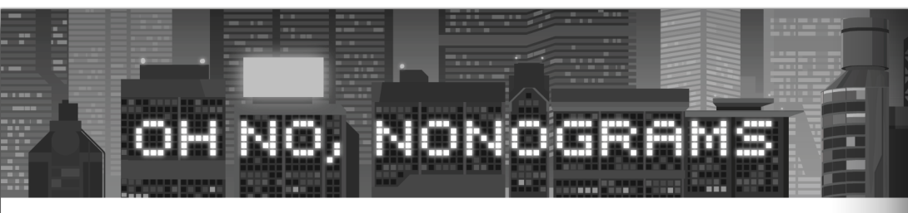
Rules
Try your hand at these nonogram puzzles! Fill in the cells to create a picture by paying attention to the numbers at the top and to the left of each grid. Numbers indicate the number of consecutive filled-in squares in the row or column.
For example, "1 2 1" would indicate a sequence of one filled-in square, two filled-in squares, and one more filled-in square, in that order. We know there's at least one blank space between each of those, but the exact number is unknown. Use the information from other rows and columns to eliminate the possibilities and resolve the image.
| 15 | 3, 5 | 2, 6 | 1, 3, 3 | 1, 1, 1, 5 | 4, 1, 1, 3 | 4, 1, 5 | 7, 3 | 4, 6 | 4, 4 | 15 | |
|---|---|---|---|---|---|---|---|---|---|---|---|
| 11 | |||||||||||
| 3, 6 | |||||||||||
| 2, 6 | |||||||||||
| 1, 7 | |||||||||||
| 1, 1, 1, 1 | |||||||||||
| 1, 1, 1, 1, 1 | |||||||||||
| 1, 1, 1, 1 | |||||||||||
| 1, 3, 1 | |||||||||||
| 2, 2 | |||||||||||
| 3, 3 | |||||||||||
| 11 | |||||||||||
| 11 | |||||||||||
| 9, 1 | |||||||||||
| 1, 1, 1, 1, 1, 1 | |||||||||||
| 1, 1, 1, 1, 1, 1 |
| 3 | 7, 1, 1, 3 | 1, 1, 3, 1, 1 | 1, 5, 3 | 1, 5, 1, 1 | 1, 5, 3 | 1, 5, 1, 1 | 1, 3, 1, 3 | 7, 1, 1, 1, 1 | 7, 1, 1, 3 | 3 | |
|---|---|---|---|---|---|---|---|---|---|---|---|
| 9 | |||||||||||
| 1, 2 | |||||||||||
| 1, 2 | |||||||||||
| 1, 2 | |||||||||||
| 1, 2 | |||||||||||
| 1, 2 | |||||||||||
| 9 | |||||||||||
| 5 | |||||||||||
| 11 | |||||||||||
| 1, 5, 1 | |||||||||||
| 11 | |||||||||||
| 0 | |||||||||||
| 9 | |||||||||||
| 1, 1, 1, 1, 1 | |||||||||||
| 9 |
| 5 | 3 | 1, 1, 1, 1, 3 | 7, 4 | 7, 4, 1 | 10, 1 | 7, 4, 1 | 7, 4 | 1, 1, 1, 1, 3 | 3 | 5 | |
|---|---|---|---|---|---|---|---|---|---|---|---|
| 7 | |||||||||||
| 5 | |||||||||||
| 7 | |||||||||||
| 5 | |||||||||||
| 7 | |||||||||||
| 5 | |||||||||||
| 7 | |||||||||||
| 1 | |||||||||||
| 1, 3, 1 | |||||||||||
| 9 | |||||||||||
| 5, 5 | |||||||||||
| 2, 5, 2 | |||||||||||
| 1, 1, 1, 1 | |||||||||||
| 1, 1, 1, 1 | |||||||||||
| 1, 1 |
Inside Back Cover
Page inside-back
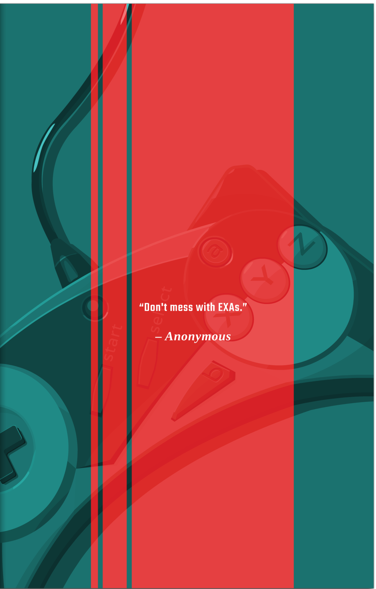
"Don't mess with EXAs."
– Anonymous
Back Cover
Page back
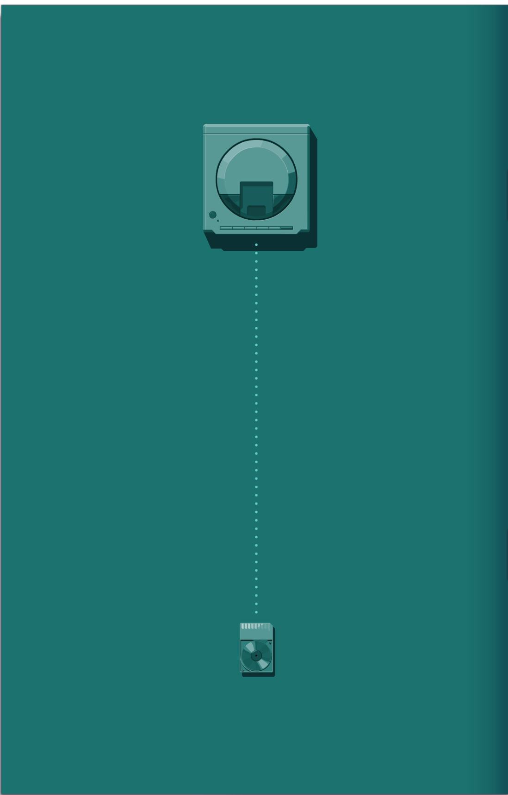